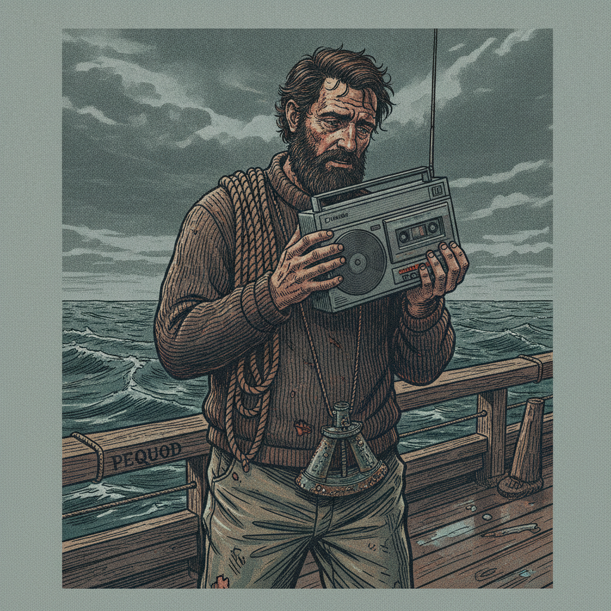

"A fantastic, gritty reimagining of Moby-Dick... tightly woven and delivers a deeply satisfying conclusion that honors the source material while fully committing to its unique 1985 industrial-tech aesthetic." — Gemini, reviewing the finished manuscript independentlyBegin Reading